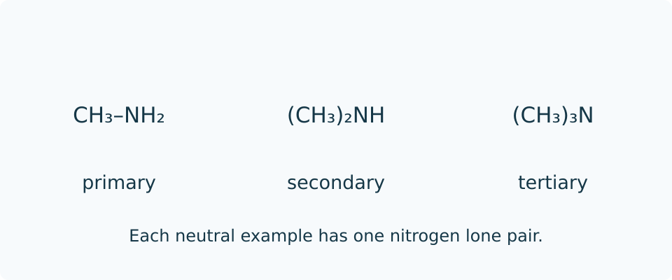
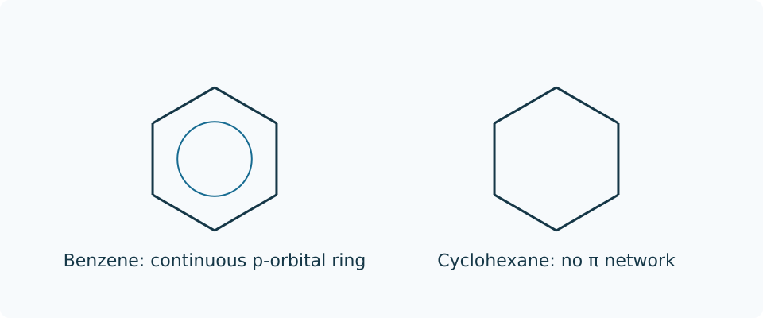
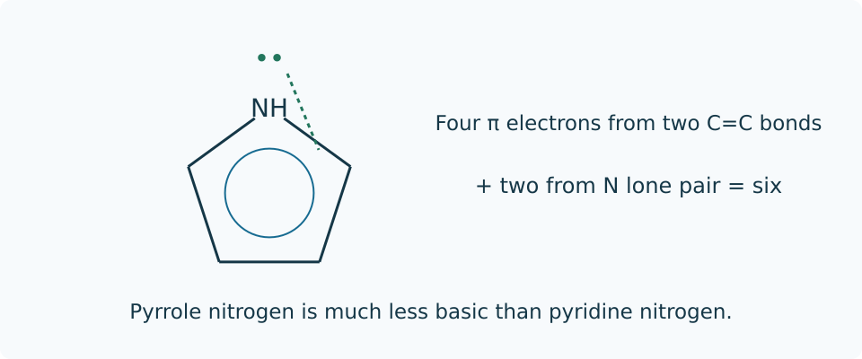
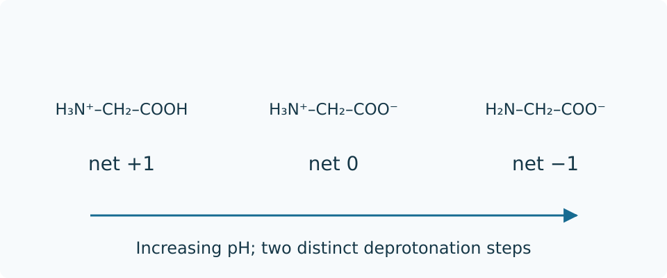

Locate nitrogen lone pairs and predict simple protonation states.
Recognise a simple aromatic pi system and explain contrasting nitrogen sites.
Draw the main charge forms of a simple amino acid at supplied pH values.
Name the nitrogen environment

Primary, secondary and tertiary amines have one, two and three carbon substituents on nitrogen.
A neutral ordinary amine has three bonds and one lone pair.
Protonation uses the lone pair
Methylamine forms methylammonium by donating its nitrogen pair to H+.
Four single bonds on nitrogen give a positive formal charge.
Amine is not amide
An amide nitrogen lone pair interacts with a neighbouring carbonyl.
Do not assign the basicity of a simple alkylamine to peptide nitrogen.
An aromatic ring can change basicity
Aniline can delocalise its nitrogen lone pair into its benzene ring.
Under comparable aqueous conditions aniline is less basic than a simple alkylamine.
Aromaticity requires a continuous pi system
Benzene has six pi electrons in a planar, cyclic, conjugated system.
For these simple rings use the 4n + 2 rule only after checking the structural requirements.
A ring is not enough

Benzene is aromatic; cyclohexane lacks the required continuous pi network.
Identify the orbitals before counting electrons.
Pyridine nitrogen keeps a separate lone pair
Pyridine nitrogen supplies one electron to the pi system; its lone pair lies outside that system.
Protonation of this lone pair can retain the aromatic sextet.
Pyrrole nitrogen supplies a pair to the ring

Pyrrole has four pi electrons from carbon double bonds plus two from the nitrogen pair.
That pair is much less available for ordinary N protonation than the pyridine pair.
An amino acid can carry two formal charges

Glycine changes from net +1 through a zwitterion to net −1 as pH rises.
Net neutrality does not mean every atom is uncharged.
Use conjugate-acid pKa consistently
Ethylammonium has approximate aqueous pKa 10.7; anilinium about 4.6.
The larger conjugate-acid pKa corresponds to the stronger base in this comparison.
Work one example on paper
Draw glycine at pH 1, 6 and 12 using supplied pKa values 2.3 and 9.6. Mark every formal charge and give the net charge. Explain why the pH 6 drawing is a zwitterion.
A common mistake to repair
“Contains nitrogen” is insufficient to predict basicity. Identify the available pair and whether it participates in conjugation or aromaticity.
Explain the correction using a drawing or a specific observation.
Test your explanation
Which atoms, bonds or observations support the claim?
What alternative would make a different prediction?
What assumption limits the conclusion?
Give a partner your explanation without the answer label. Can they follow it?